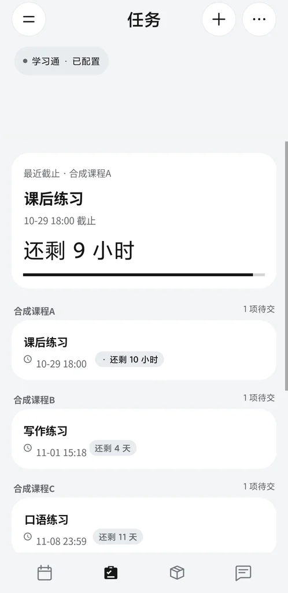
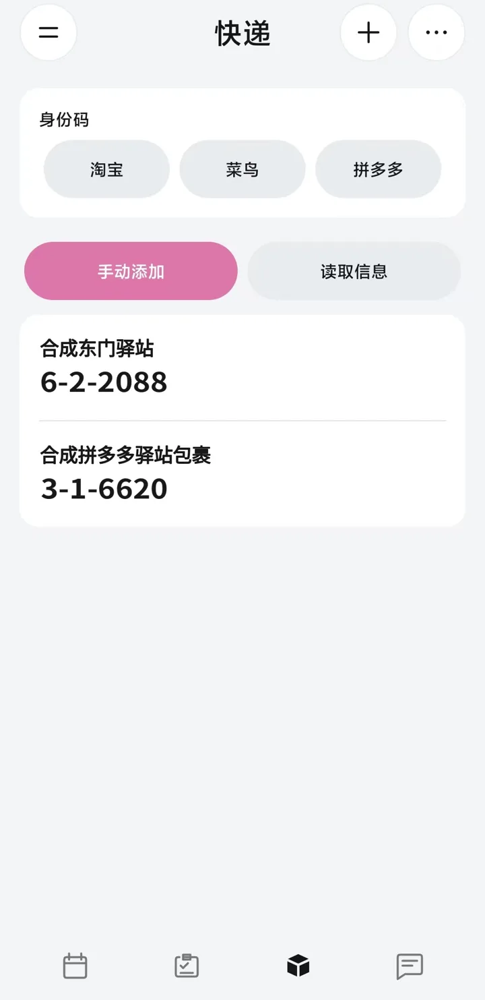
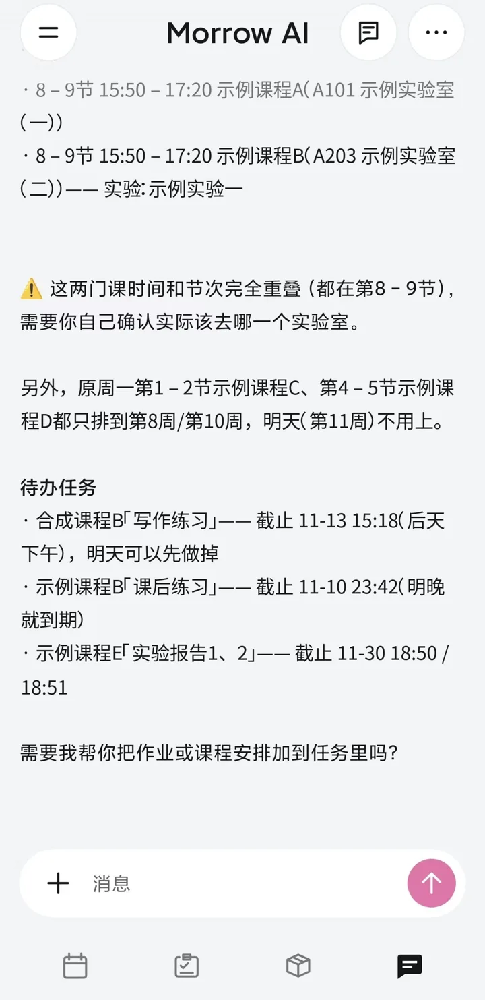

AI 助手
内置 AI 对话，支持自定义 API、项目与记忆管理。它读得懂你的课表与待办：问一句「明天有什么安排」，它会把课程和快截止的作业一起理出来，还会提醒哪两门课撞了时间。
课表、任务与快递，一个应用装下。
Morrow 是 Android 校园助手。按周查看课程，管理作业和取件码，还能让内置的 AI 助手帮你理一理明天的安排。
当前版本 3.1.1 · Android 8.0 及以上 · 一个安装包 · 无需插件 · 数据保存在本机
从上课到交作业、取快递，再到换手机时的数据备份，都在一个应用里。
内置 AI 对话，支持自定义 API、项目与记忆管理。它读得懂你的课表与待办：问一句「明天有什么安排」，它会把课程和快截止的作业一起理出来，还会提醒哪两门课撞了时间。
左右滑动切周，支持多份课表、单次调课、停课与冲突课程选择，考试信息显示在课表时间轴上。宿迁学院、徐州工程学院可学校导入，其他学校可网页导入或手动添加；重新同步会保留你本地新增、修改、删除的课程和单次调整。
手动添加任务，或连接学习通同步作业，按课程分组显示截止时间；支持本地编辑、自动刷新，误删的任务可以恢复。
手动添加、粘贴取件文字，或开启通知识别自动收集取件码；提供官方身份码入口与取件提醒。物流记录只展示本机已有内容，不自动实时更新。
在桌面查看课程与待取快递，支持多种尺寸。已导入的课表可以离线查看，没网也不耽误看课。
在「设置 → 数据管理」导出或导入本地加密备份，用密码加密、不经过服务器。换手机或卸载前先导出一份，数据就能完整带走。
四个最常用的页面。截图均为示例数据。
一周课程一屏看清：左右滑动切周，考试信息直接显示在课表时间轴上，时间重叠的课程会标出冲突，选哪一节由你决定。
最近截止的作业置顶并给出倒计时，其余按课程分组、标明截止时间。手动添加，或连接学习通自动同步，都不会漏。

取件码用大字摆在明处，到驿站不用翻短信。淘宝、菜鸟、拼多多的官方身份码入口也在同一页，点开就能用。

它读得懂你的课表和待办：问一句「明天有什么安排」，它会把课程和截止任务一起理出来，还会提醒你哪两门课撞了时间。

一个安装包，包含课表、任务、快递、桌面小组件和 AI 助手。
当前版本 3.1.1 · Android 8.0 及以上。覆盖安装即可更新，不用先卸载。更新记录与校验文件见 GitHub Releases。
版本 3.1.1
课表、任务和快递数据保存在本机。学校与学习通账号密码在验证成功后使用 Android Keystore 加密保存，用于对应平台的验证与刷新。同步失败保留已有数据。
通知识别默认关闭，需要应用内同意和系统授权；只解析选定来源，不保存通知全文，不读取短信数据库。桌面显示取件码需单独开启。
发送的 AI 消息及所选附件会交给配置的服务商处理，请在发送前确认内容。AI 给出的课程和任务建议请核对；数据变更需确认后执行。
AI 对话使用你自行配置的 API。加密备份不包含账号密码、API 配置与密钥、AI 聊天、网页登录状态和系统授权。
公告和更新服务不接收课表、账号或密码。徐州工程学院当前教务入口使用 HTTP；密码按学校协议加密，但账号、课表和会话传输不受 HTTPS 保护，请在可信网络中同步。
课表不会通过系统备份自动迁移。请在「设置 → 数据管理」导出本地加密备份：备份用密码加密、不经过服务器，请妥善保管文件与密码，密码丢失无法找回。